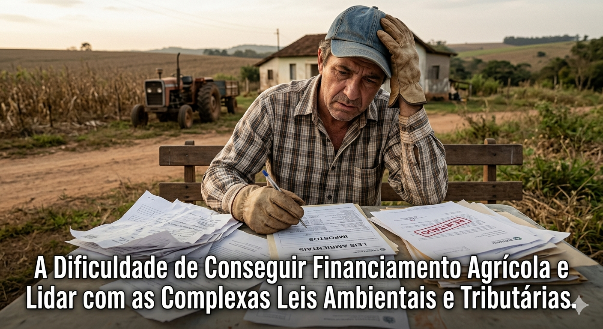

Embora os Planos Safra recentes tenham batido recordes nominais de recursos (com o Plano Safra empresarial e familiar superando a casa dos R$ 600 bilhões somados), o acesso real a esse dinheiro está longe de ser simples.
Falta de Garantias Reais: Pequenos e médios produtores sofrem para apresentar as garantias exigidas pelos bancos (como hipotecas de terras ou benfeitorias).
Burocracia de Originação: O processo de liberação de crédito é lento e exige uma quantidade massiva de certidões, laudos de produtividade e projetos técnicos, o que muitas vezes faz o recurso chegar após o período ideal de plantio.
A Ascensão do Crédito Privado: Como o dinheiro subsidiado pelo governo acaba rápido nas agências, o produtor é forçado a recorrer a títulos privados, como as CPRs (Cédulas de Produto Rural) e Fiagros. Eles salvam o caixa, mas costumam trazer taxas de juros mais salgadas.
O cumprimento das normas ambientais deixou de ser apenas uma obrigação legal e passou a ser o principal critério de corte para a concessão de crédito pelos bancos.
Bloqueio de Crédito por Inconsistências: Bancos públicos e privados utilizam monitoramento via satélite em tempo real. Se houver sobreposição da propriedade com terras indígenas, unidades de conservação ou indícios de desmatamento ilegal pós-2008, o crédito é negado sumariamente.
O Nó do CAR (Cadastro Ambiental Rural): Apesar de ser obrigatório há anos, a validação definitiva do CAR pelos órgãos estaduais caminha a passos de tartaruga. A falta dessa validação definitiva gera insegurança jurídica e dificulta a obtenção de licenças para investimentos de longo prazo.
O agronegócio opera em um regime fiscal de alta complexidade, lidando com uma mistura de incentivos e obrigações acessórias pesadas. O setor vive um momento de transição e incerteza:
Adaptação à Reforma Tributária: A transição para o novo modelo de IVA (Imposto sobre Valor Agregado) exige atenção máxima. Embora a regulamentação (pela Lei Complementar nº 214/2024 e textos subsequentes) tenha mantido alíquotas diferenciadas e regimes favorecidos para insumos e alimentos da cesta básica, a migração para o novo sistema exige um custo de conformidade (burocracia interna) gigantesco para as fazendas se adaptarem.
Créditos Acumulados: Um dos maiores pesadelos logísticos-financeiros do produtor exportador é a retenção e a demora na recuperação de créditos tributários (como o ICMS e o PIS/Cofins sobre insumos). Esse dinheiro que fica "preso" no Estado corrói o capital de giro da propriedade.